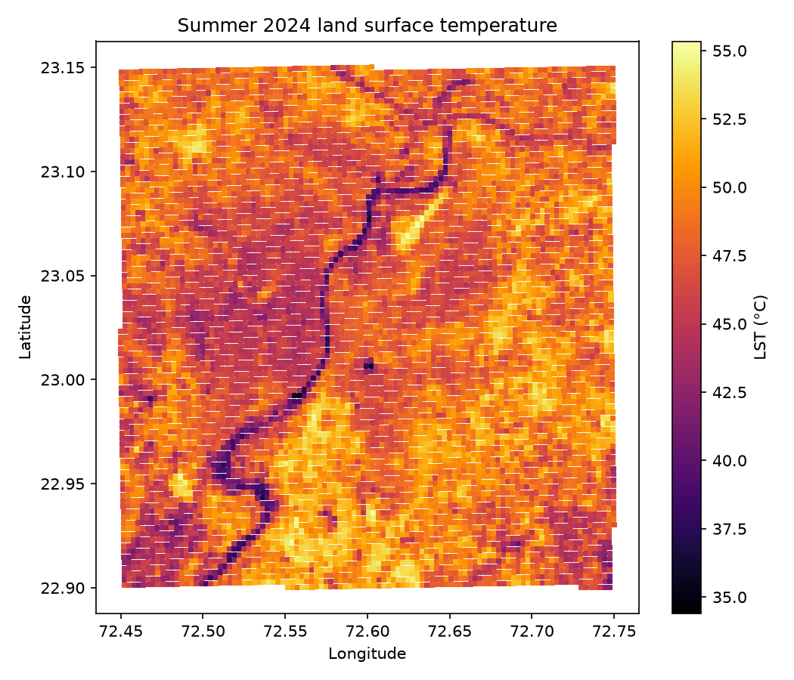
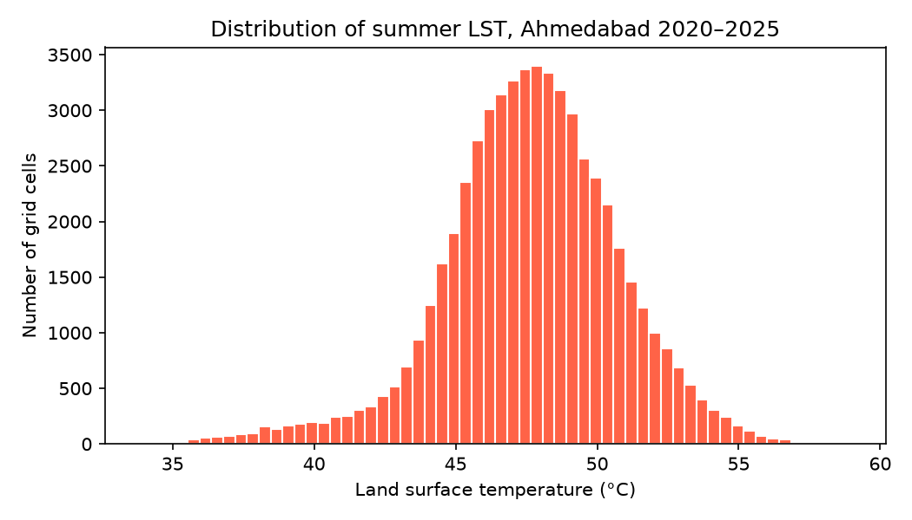
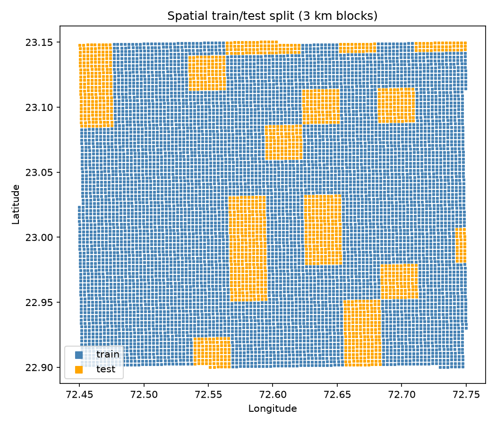
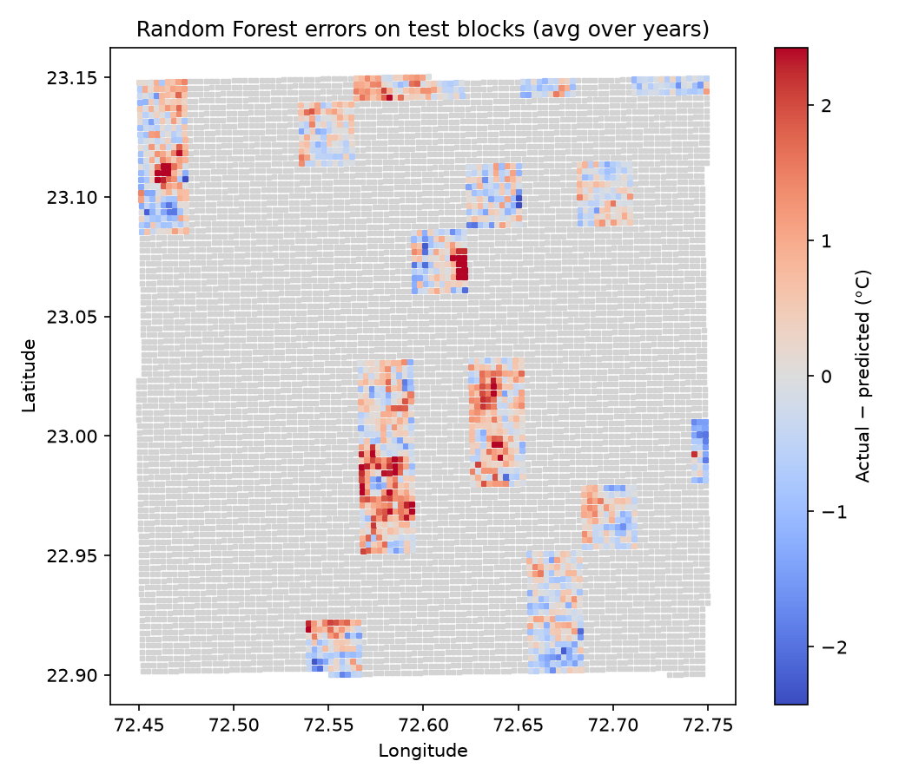

1. The question
How accurately can machine learning predict summer land surface temperature (LST) across Ahmedabad from satellite-derived vegetation, built-up, moisture and land-cover features, how well do the models generalise to geographically separate areas, and which features are most informative for identifying heat hotspots?
Why it matters: summer surface heat varies strongly within a city. A model that maps it from widely available satellite features can help planners shortlist areas for closer investigation and possible cooling measures.
2. Data
- USGS Landsat 8 & 9, Collection 2 Level 2: surface reflectance and surface temperature at 30 m, accessed through Google Earth Engine.
- ESA WorldCover v200 (2021): 10 m land-cover map, used for land-cover fractions.
- Study area: 72.45–72.75°E, 22.90–23.15°N (about 31 km × 28 km around Ahmedabad).
- Period: April–June of each year from 2020 to 2025.
Variables
| Variable | Meaning |
|---|---|
| LST | Target. Summer median land surface temperature (°C) |
| NDVI | Vegetation index = (NIR − Red) / (NIR + Red). Higher means greener. |
| NDBI | Built-up index = (SWIR1 − NIR) / (SWIR1 + NIR). Higher means more built-up or dry bare surface. |
| NDWI | Water index = (Green − NIR) / (Green + NIR). Higher means more water or moisture. |
| frac_* | Fraction of the cell covered by tree, shrub, grass, crop, built, bare and water (WorldCover) |
Access limits: the data is free but requires a registered Google Earth Engine project (noncommercial tier). No personal data is involved.

3. Preprocessing
- Cloud masking: pixels flagged as cloud, dilated cloud or cloud shadow in the Landsat QA band were removed.
- Unit conversion: raw values were converted to reflectance and to temperature in °C using the official USGS scale factors.
- Summer composite: the median of all clear images from April–June for each year, so a single unusual day cannot dominate.
- Aggregation: 30 m Landsat pixels and 10 m land-cover pixels were averaged into a 300 m grid.
- Quality filter: cells built from fewer than 3 clear observations were dropped (184 of 56,766 rows, 0.3%).
- No missing values remained, so no imputation was needed.
- Scaling (Linear Regression only) was fitted inside a pipeline on training folds only, so test data never influenced it.

4. Baseline and methods
Latitude and longitude were deliberately not used as features, so the models must learn from environmental conditions rather than memorising locations.
5. Evaluation design
Nearby grid cells are almost identical, so a random split would leak information between training and test. Instead, the area was cut into 110 blocks of 3 km × 3 km. A fixed random 20% of blocks (22 blocks, seed 42) was held out as the final test set. All six years of a cell always stay on the same side of the split.

- Tuning: 5-fold GroupKFold cross-validation on training blocks only, grouped by block.
- Final test: each model was trained on all training blocks and scored once on the test blocks, after all choices were fixed.
- Metrics: MAE (typical error in °C), RMSE (penalises large misses), and R² (share of variation explained compared with the mean).
- Uncertainty: a block bootstrap (1,000 resamples of test blocks) gives 95% intervals for test MAE.
6. Results
Model comparison
Interactive map
Choose a layer to explore observed temperature, features, model errors and hotspots. Click any square for its details.
Relationship explorer
Pick a feature to see how it relates to temperature (2,000 random cells from 2024).
Which features matter?
Random Forest permutation importance on test data: how much MAE rises when a feature is shuffled.
Linear Regression standardised coefficients (°C per 1 SD). NDVI, NDBI and NDWI are strongly correlated, so individual weights are unstable and should not be read as independent effects.
Can the model find hotspots?
7. Errors

By actual temperature
By dominant land cover
The model pulls extreme values toward the average: the hottest cells (above 54 °C) are underestimated by about 4 °C. Errors also cluster in space, for example next to the airport, which suggests heat sources the features do not capture, such as tarmac, roof materials or industrial activity.
8. Limitations
- LST is ground-surface temperature at the satellite's morning overpass (about 10:30 IST), not air temperature or the heat people feel.
- The land-cover map is a single 2021 snapshot, so it does not change by year.
- NDBI cannot fully separate buildings from dry bare soil.
- Only 22 test blocks, so the scores carry real uncertainty (shown by the bootstrap intervals).
- Results are associations; they do not show that adding vegetation would cool an area by a specific amount.
- The model underestimates the most extreme hotspots.
9. Conclusion
Both models clearly beat the mean baseline on geographically separate test areas. Random Forest is the best model (test MAE ≈ 1.38 °C, R² ≈ 0.66), but only marginally better than Linear Regression, so most of the predictable signal is close to linear. NDBI is by far the most informative feature, and static land-cover fractions add little once the spectral indices are known. The model identifies about half of the true hottest cells, roughly five times better than chance. That makes it useful for shortlisting candidate hotspots, but not as a stand-alone screening tool.
10. Reproduction
- Clone the GitHub repository and install the packages in
requirements.txt. - Register a Google Earth Engine project (free noncommercial tier) and run
notebooks/01_gee_export.ipynbto export the raw CSVs. The exported CSVs are also included indata/raw/. - Run notebooks 02 to 06 in order: exploration and cleaning, spatial split (seed 42, 3 km blocks), models, interpretation, and website data export.
- The exact held-out blocks are listed in
data/processed/test_blocks.json.
Sources and tools
- Landsat 8–9 Collection 2 Level 2 data courtesy of the U.S. Geological Survey.
- Zanaga, D. et al. (2022). ESA WorldCover 10 m 2021 v200.
- Gorelick, N. et al. (2017). Google Earth Engine: Planetary-scale geospatial analysis for everyone. Remote Sensing of Environment.
- Pedregosa, F. et al. (2011). Scikit-learn: Machine Learning in Python. JMLR.
- Leaflet, Chart.js, and OpenStreetMap base map.
AI-use disclosure
We used Claude (Anthropic) as a coding assistant while building this project. It helped us draft parts of the Python notebooks and the website code, and explained methods such as spatial cross-validation and permutation importance when we were unsure. We ran every notebook ourselves, checked the outputs at each step (for example, fixing the Earth Engine export error and the grid-cell ID mismatch), and verified that the maps matched real Ahmedabad landmarks. The research question, the choice of data, the evaluation design and the interpretation of the results are our own, and we take full responsibility for the work.